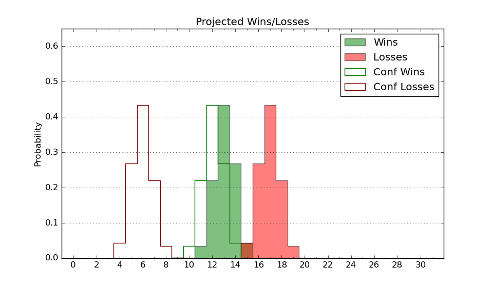

| Home | Game Probabilities | Conferences | Preseason Predictions | Odds Charts | NCAA Tournament |
| City: | Alcorn State, Mississippi | |
| Conference: | Southwest (2nd)
| |
| Record: | 9-4 (Conf) 10-15 (Overall) | |
| Ratings: | Comp.: -9.3 (268th) Net: -9.3 (267th) Off: 98.2 (247th) Def: 107.5 (272nd) SoR: 0.0 (165th) |
| Remaining | ||||||
|---|---|---|---|---|---|---|
| Date | Opponent | Win Prob | Pred. | |||
| 2/19 | Jackson St. (266) | 64.4% | W 63-59 | |||
| 2/26 | @ Prairie View A&M (290) | 39.9% | L 72-75 | |||
| 2/28 | @ Texas Southern (177) | 19.0% | L 61-71 | |||
| 3/3 | Mississippi Valley St. (356) | 92.7% | W 84-66 | |||
| 3/5 | Arkansas Pine Bluff (352) | 88.9% | W 77-63 | |||
| Previous | Game Score | |||||
| Date | Opponent | Win Prob | Result | Off | Def | Net |
| 11/9 | @Washington St. (41) | 4.2% | L 67-85 | 11.0 | -12.5 | -1.5 |
| 11/10 | @Seattle (120) | 11.6% | L 66-69 | 5.1 | 12.7 | 17.8 |
| 11/13 | @Portland (212) | 22.6% | L 58-62 | -8.7 | 17.4 | 8.7 |
| 11/15 | @Gonzaga (1) | 0.6% | L 57-84 | 0.6 | 13.1 | 13.7 |
| 11/26 | @Southern Illinois (136) | 13.8% | L 59-62 | 11.5 | 1.7 | 13.2 |
| 11/28 | @Milwaukee (325) | 52.6% | W 61-57 | -12.0 | 14.8 | 2.8 |
| 12/4 | @Tulane (95) | 8.2% | L 64-85 | 1.2 | -8.0 | -6.8 |
| 12/6 | @Houston (3) | 1.0% | L 45-77 | -12.7 | 13.6 | 0.9 |
| 12/14 | @Wichita St. (73) | 6.1% | L 63-82 | 6.0 | -8.6 | -2.6 |
| 12/16 | @Tulsa (153) | 16.7% | L 62-83 | -2.4 | -9.5 | -12.0 |
| 12/20 | @Baylor (6) | 1.1% | L 57-94 | -0.4 | -7.4 | -7.8 |
| 12/22 | @Oklahoma (30) | 3.5% | L 48-72 | -11.9 | 5.0 | -6.9 |
| 1/5 | @Jackson St. (266) | 34.7% | W 65-50 | 10.9 | 16.6 | 27.6 |
| 1/8 | @Alabama A&M (338) | 58.9% | W 78-71 | 8.9 | -3.2 | 5.8 |
| 1/10 | @Alabama St. (312) | 46.4% | W 70-60 | 1.6 | 14.0 | 15.7 |
| 1/15 | Texas Southern (177) | 44.4% | W 73-72 | 16.1 | -12.5 | 3.6 |
| 1/17 | Prairie View A&M (290) | 69.3% | L 73-74 | -1.4 | -11.4 | -12.7 |
| 1/22 | @Florida A&M (315) | 47.7% | L 68-70 | 10.8 | -13.9 | -3.0 |
| 1/24 | @Bethune Cookman (328) | 54.7% | W 70-67 | 5.1 | -7.3 | -2.2 |
| 1/29 | Southern (163) | 42.3% | W 68-64 | -3.0 | 4.6 | 1.6 |
| 1/31 | Grambling St. (304) | 72.3% | L 73-80 | -6.1 | -13.7 | -19.8 |
| 2/5 | @Arkansas Pine Bluff (352) | 70.1% | W 70-64 | -10.0 | 5.7 | -4.4 |
| 2/7 | @Mississippi Valley St. (356) | 78.9% | W 79-71 | 0.5 | -1.0 | -0.5 |
| 2/12 | Bethune Cookman (328) | 80.4% | L 63-71 | -13.4 | -15.0 | -28.5 |
| 2/14 | Florida A&M (315) | 75.6% | W 68-56 | 0.5 | 8.0 | 8.6 |
| Stats & Trends | |||||
|---|---|---|---|---|---|
| Current | Day | Week | Month | Season | |
| Composite | -9.3 | +0.1 | -0.8 | -3.2 | +6.3 |
| Comp Rank | 268 | -- | -5 | -24 | +74 |
| Net Efficiency | -9.3 | +0.1 | -0.9 | -4.3 | -- |
| Net Rank | 267 | +1 | -8 | -39 | -- |
| Off Efficiency | 98.2 | +0.0 | -0.5 | -0.4 | -- |
| Off Rank | 247 | -3 | -7 | -14 | -- |
| Def Efficiency | 107.5 | +0.1 | -0.4 | -3.9 | -- |
| Def Rank | 272 | +2 | -2 | -68 | -- |
| SoS Rank | 174 | +1 | -42 | -167 | -- |
| Exp. Wins | 13.1 | +0.0 | -0.7 | -1.7 | +4.3 |
| Exp. Conf Wins | 12.1 | +0.0 | -0.7 | -1.7 | +4.2 |
| Conf Champ Prob | 6.3 | -0.1 | -8.3 | -46.6 | +4.6 |

| Advanced Stats | ||
|---|---|---|
| Stat | Value | Rank |
| Off Eff FG % | 0.460 | 305 |
| Off Ast Ratio | 0.110 | 345 |
| Off ORB% | 0.288 | 152 |
| Off TO Rate | 0.168 | 201 |
| Off FT Ratio | 0.293 | 209 |
| Def Eff FG % | 0.547 | 329 |
| Def Ast Ratio | 0.173 | 348 |
| Def ORB% | 0.287 | 198 |
| Def TO Rate | 0.176 | 105 |
| Def FT Ratio | 0.390 | 327 |